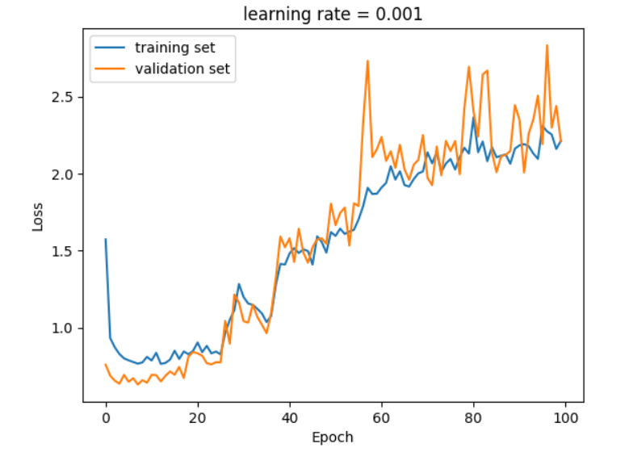
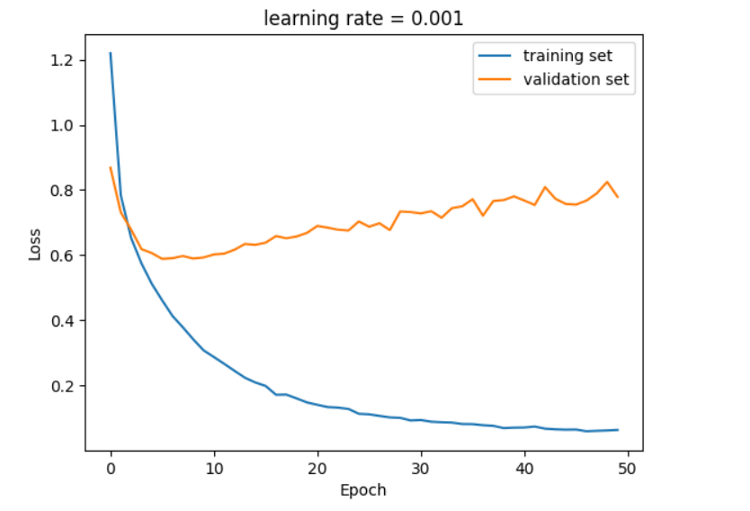

Deep learning · ensemble methods
The weakest model made the best ensemble
Four CNNs — LeNet, AlexNet, VGG and ResNet-18 — trained on CIFAR-10 and stacked under a learned meta-network. Stacking any of them with copies of itself gained 2–3 points. Stacking different ones gained more, and the winning trio included LeNet, which on its own scored 68% against AlexNet's 86%. The report says why that was hard to plan for. This page shows it.
Stacking, running live
Four base learners with different inductive biases, a logistic meta-learner fit on their outputs — Wolpert's stacked generalisation, done properly on three disjoint splits.
Pairwise disagreement on the test split
How often two learners predict different classes. This is diversity, measured directly, and it's the quantity that predicts whether stacking will help. The report reached for bias and variance instead — which can't be read off a trained CNN — and so its combination search had to be blind.
Base learners in the stack
Start with the three weak learners: none can draw the curve, but each is wrong in a different region, and the stack beats the best of them. Now add k-NN. It's strong enough on its own that the stack mostly becomes k-NN — there's little left for the others to correct. Diversity is what stacking pays for, not strength.
The setup
CIFAR-10 is 60,000 colour images at 32×32, ten classes, evenly split. The training set was
divided into train and validation with random_split; augmentation was
horizontal flips, colour jitter and rotation — and deliberately not vertical flips, which
would take a car outside the distribution of cars.
Four base learners, chosen for being different from one another rather than for being the best available. LeNet trained from scratch; AlexNet and VGG fine-tuned from ImageNet with the convolutional stack frozen and only the classifier trained; ResNet-18 fine-tuned likewise. Each was trained six times across two learning rates, and the best run's test accuracy is what gets reported.
The meta-learner is itself a small neural network. Its input is the concatenated class probabilities of the base learners; its output is the final ten-way prediction. It trains with Adam at 1e-3 for ten epochs on the base learners' outputs.
Four learners, four failure modes
Before anything is stacked, each base learner has to be understood on its own — and the training curves say more than the accuracy numbers do.
| Backbone | Init | LR | Epochs | Test accuracy |
|---|---|---|---|---|
| LeNet | scratch | 1e-3 | 100 | 68.02 % |
| AlexNet | ImageNet, conv frozen | 1e-4 | 100 | 85.58 % |
| VGG | ImageNet, conv frozen | 1e-4 | 10 (early stop) | 84.17 % |
| ResNet-18 | ImageNet | 1e-4 | 10 (early stop) | 84.29 % |


LeNet, by contrast, converges cleanly and stays converged — it simply doesn't have the capacity to go further than 68%. That turns out to matter.
What stacking bought
Copies of the same model
First control: stack three or six independently-trained copies of one architecture. This isolates what the meta-learner gains from averaging out training noise alone.
Two to three points across the board — and almost nothing more from six copies than from three. Independently-trained copies of the same architecture disagree a little, but not much, and the meta-learner has soaked up what there is by the third one.
Different models
Second experiment: every three-way combination of the four architectures.
The result worth remembering. The three strongest individual models together scored 88.51. Swap ResNet for LeNet — a 68% model in place of an 84% one — and the ensemble goes up, to 88.67. LeNet is not a better classifier. It is a more different one: trained from scratch rather than fine-tuned from ImageNet, shallow rather than deep, it makes mistakes the other two don't. That is the only thing a meta-learner can use.
The margin is small and comes from single runs, so it shouldn't be over-read as a ranking. What it does establish is the direction: combining models with different failure modes beats combining models with the same one, even at a cost in individual accuracy.
What didn't work
The report is candid about this, and the point deserves restating because the playground at the top of the page is a direct response to it.
Stacking is supposed to balance bias and variance across its members. But neither quantity can be read off a trained CNN. Without them, there was no principled way to choose which models to stack — so the combination experiment above was a search, not a design. Its results are real; they just aren't explained by anything measured beforehand.
The practical proxy, which the report doesn't use and the playground does, is pairwise disagreement: on a held-out set, how often do two models predict different classes? Cheap to compute, and it says directly what stacking needs to know. Running that matrix on the four CNNs before choosing combinations is the obvious next step, and it likely would have pointed at LeNet + AlexNet + VGG without the search.
The other gap the report names is the absence of transformers from the pool — ViT would have added a genuinely different inductive bias, which by the argument above is exactly what the ensemble wanted. Model soups (averaging weights rather than outputs) are named as the other direction: ensemble-like gains without ensemble-like inference cost.
The talk
The mid-project presentation. Its numbers are earlier than the report's; the report is final.
The report
Thirteen pages, with the code for every stage in the appendices. Open it in its own tab ↗
Credits
A two-person course project
Yiming Cao initiated the project: he chose the topic, built the implementation and ran the experiments. The report and the presentation were produced collaboratively with a team member. Yiming Cao is first author.
The stacking playground on this page was built afterwards by Yiming Cao and is not part of the original submission.
Built on
- D. H. Wolpert. Stacked generalization. Neural Networks 5(2), 1992.
- A. Krizhevsky, G. Hinton. Learning multiple layers of features from tiny images. 2009 — the CIFAR-10 dataset.
- Z.-H. Zhou. Ensemble Methods: Foundations and Algorithms. CRC Press, 2012.
- LeCun et al. 1998 (LeNet); Krizhevsky et al. 2012 (AlexNet); Simonyan & Zisserman 2014 (VGG); He et al. 2016 (ResNet).